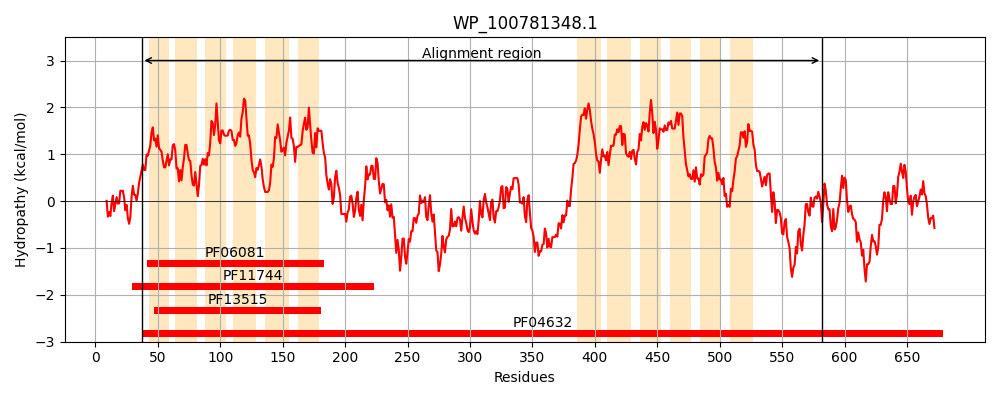
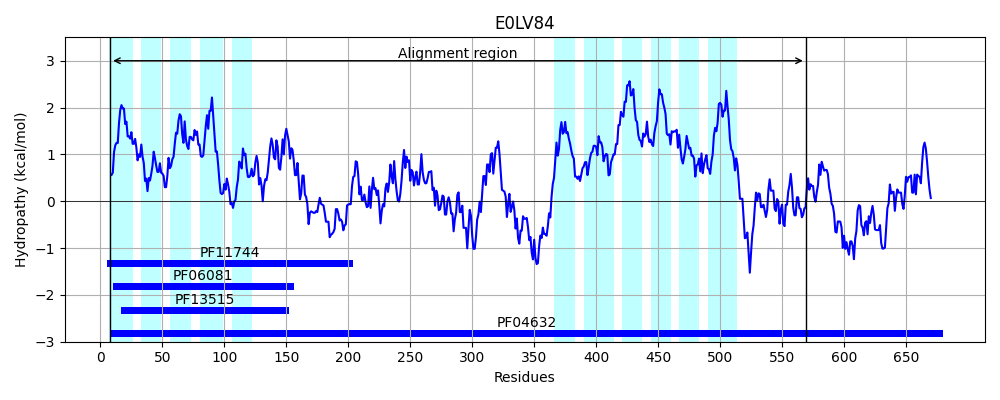
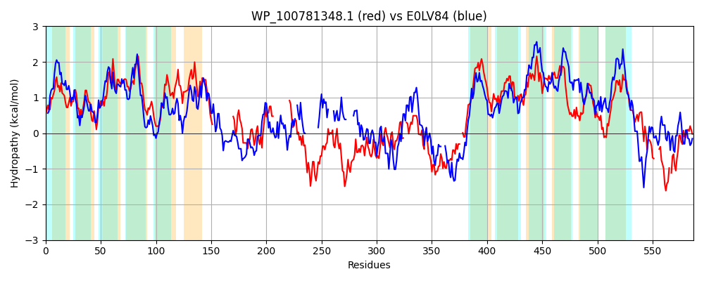

Hit Accession: E0LV84
Hit TCID: 2.A.85.1.4
Hit Description: gnl|BL_ORD_ID|3550 gnl|TC-DB|E0LV84|2.A.85.1.4 Fusaric acid resistance protein conserved region OS=Pantoea sp. aB GN=PanABDRAFT_1078 PE=4 SV=1
Mach Len: 587
e:0.000000
Query TMS Count : 12
Hit TMS Count: 11
TMS-Overlap Score: 7.650000
Predicted Substrates:CHEBI:5199;Fusaric acid
BLAST Alignment:
Score: 538 , Bit scores: 211 bits, E-value: 1.9e-59, Alignment length: 587, Percentage identity: 28
Query: 37 AILFSAKSFAAAMLAYYLALSIGLQRPSWAIITVYIVSQTSVGASLSRSVYRLVGTLVGAAATVFIVPTFVNQPILCSAMLGLWIAGCLCLSLLERTPRGYAFLLAGYTASLIGFPAVSVPGTIFDLAVIRVEEIAIGILCAGLIHRSVLPV------------------RIAGRFNSTLAQTLATARQRIADTLAGKPVAAETLRL--------------ALSLQFLQGINHHLPWDDGLSVPHRQARKAIHDRLARLLIVNGELYDRLQRCGQPPDDLQTLLTEAEVWLRGPEAHRTALSADRLLSRCEPLINRCAPAQTLNE--ALRVSLVRHLAEAIRLLQQSERLAKAIYHRRSPTLPPDAHAAKGYVFHR--DPLSALRTAFGAFVIILSGCLIWIGSAWPDGGTAVSILGVCCSLFASFDAPAAQLVKYLIGCVWGVLFSLLYSFALLPQVSEFVLLAAMLAPVYLLAGSLQARPPTTFMAMGITLTLPILCELGPSYQGDFATAMNTSIALFVAIGYAAFGMRLLQTVQADAAVHRLLTLCRRD----IRRAARGRLA-HNAHRWTNLMIDRTALLLPR 582
A+LF+ K+ AA +A +AL + ++P+WA+ TV++ SQ +++S+S++RL+GTL+G + I P V P+L S + LW+ CL LSL +RTP+ Y F+LAGY+A+++GFP V P I + + R+EEI +GILC+ L+HR V PV ++ S +A+ + R+ I +AG P+ ETL +S+Q+ Q +++ LP AI RL V EL R C + + E +WL + A + + S L + L E L + L+ LA +R+ E ++ S D A + HR D +A AF+ L WIGS W DG A + + S FA D+P + ++ G V ++ SL Y L+PQ + L L P +L + A P T + + + + +P L Y + +N +I+ V I +A L++ + R + RD I+ R + ++ M+DR ++LPR
Sbjct: 8 AVLFACKTSLAAFIALSVALFLNFEKPAWALTTVFVTSQLYAASTVSKSLFRLMGTLLGGIFILLIYPETVQSPVLFSLCVSLWVTVCLYLSLHDRTPKSYVFMLAGYSAAIMGFPDVDTPSAIINTVISRIEEITLGILCSTLVHRLVFPVSMHHLLGQSVNHWFLNARKLCDELISGMAKNKSLEREDILIQMAGYPLNVETLLTHCVYEGEAARNVIRLVSVQY-QHLSYLLP-----------TLTAIESRLG----VLAELNIRFPPC------VTDVFQEFLLWLHHDRINDIAGLREAIASSQATLEEEWRAGRLLTEESLLLIGLLERLANFVRIADAYENVSARAGDLYS---HGDGAAIRNIREHRHIDKGLLRLSALTAFLATFLSSLFWIGSGWADGANAPLMAAIISSFFAGVDSPVTPMKLFVKGVVIALVVSLFYIAFLIPQANTLQALMICLLPGLMLLSLVIANPATNMVGLSVAIQIPGFIGLSHHYVPNLIVTLNAAISSMVGIMFAVVLTALIRNKRPSWIARRAVQRGLRDLLGFIKMVERNSATLLSRQQFIARMLDRVNIILPR 569 | Protein Hydropathy Plots: |
|---|
|  |  |
Pairwise Alignment-Hydropathy Plot:
|
|---|
|  |